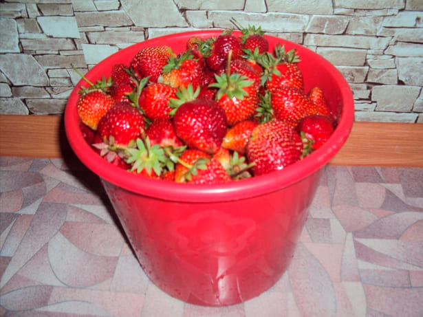

WIE HABE ich 5000 EURO auf den VERKAUF VON ZU HAUSE ANGEBAUTE ERDBEEREN VERDIENT??

Hallo, Liebe Leser! Heute möchte ich Ihnen erzählen, wie ich in ein paar Monaten geschafft habe, 5000 EURO zu verdienen , ohne etwas zu tun.
Mein Name ist Paulina Wagner, ich bin 52 Jahre alt. Ich lebe in Berlin, arbeite als Bibliothekarin in der Schule. Ich habe ein kleiner Lohn 1200 EURO. Eigentlich habe ich nie ein Geschäft gemacht, mein ganzes Leben lang arbeitete ich in der Schule. Nur am Landhaus im Sommer züchte ich ein wenig Gemüse: Kartoffeln, Kohl, Gurken, Zwiebeln.
Landhaus ist klein, nur 6 Hektar. Aber die Ernte reicht mir wohl. Doch ist es die Hilfe und die Einsparung des Familienbudgets. Aber trotzdem will ich auch die Kinder mit den Enkeln helfen. Die ältere Enkelin heißt Peter, und er lernt bereits in der 1. Klasse. Die jüngere Paula ist im Kindergarten. Meine älteste Tochter ist von Ihrem Mann geschieden, sie erzieht Kinder allein. Ein anderer Sohn ist der jüngste, er studiert am Institut. Im Allgemeinen wäre extra Geld gute Hilfe sein.
Und vor kurzem habe ich in einer Zeitschrift einen Artikel gelesen, wie eine Rentnerin aus Vietnam ein Beerengeschäft organisiert hat. Sie ist Biologin beruflich, im Ruhestand hat sie beschlossen, ihre Kenntnisse in die Praxis umzusetzen und Geld zu verdienen. Sie hat eingekauft und fing an, Beeren in einer winzigen Wohnung anzubauen. Als Ergebnis wurde der Vietnamesischen Rentnerin auf dem Verkauf von Beeren für eineinhalb Jahre reich und zog in eine neue Wohnung um. Jetzt kennen sie bereits die Journalisten aus der ganzen Welt.
Kurz gesagt, nachdem ich das gelesen hatte, beschloss ich auch, Erdbeeren anzubauen. Ich begann, nach Informationen zu suchen, begann zu lesen, wie man Sie besser anbauen kann, welche zu nehmen sind, welche zu Hause sich akklimatisieren können, weil am Landhaus kann man nur im Sommer anbauen. Und ich wollte gerade in der Wohnung versuchen, so dass die Ernte das ganze Jahr wäre. Als Ergebnis fand ich Home Berry Box. In einer Schachtel gibt es Erdbeere- oder Gartenerdbeeresamen zur Auswahl, fruchtbaren Boden und einer Sprühflasche für die bequeme Bewässerung von Beeren.
ich nahm zwei Schachteln – eine mit Erdbeeren, die andere mit Gartenerdbeeren. Bestellte auf der offiziellen Website, wie ich von Frauen im Gärtnerforum beraten wurde. Ich füge sofort einen Link hinzu, damit Sie nicht verloren gehen, wenn Sie sich entscheiden, meinem Beispiel zu folgen. Bestellte hier. Die Bestellung kam schnell. Vorher rief mich ein sehr angenehmes Mädchen an, gab alle Details der Bestellung an, konsultierte über die Lieferung und das Produkt. Im Allgemeinen mochte ich den Service. Die Bestellung kam schnell, da ich wählte die Express-Lieferung. Meine Beeren sind direkt zu mir nach Hause gekommen.
Und ich habe sie in einer Box gepflanzt, auf die Fensterbank gestellt, weil dies der perfekte Ort für sie ist, weil Beeren einen hellen Ort brauchen, aber irgendwo wird es gesagt, dass ein dunkler Ort auch passt. Ich bewässerte 2-3 mal pro Woche, alles wie in Anweisungen. Nach 2 Wochen sind meine Erdbeeren hinaufgestiegen. Einen Monat später sammelte ich meine erste Ernte von Gartenerdbeeren und zwei Wochen später von Erdbeeren, sie wuchsen länger.
Meine Freude war keine Grenze! Die erste Ernte haben wir natürlich gegessen. Es gab anderthalb Kilogramm Gartenerdbeeren und ein Kilogramm Erdbeeren. Die ganze Familie wurde mit Beeren gefüttert. Es ist nicht nur lecker, sondern auch nützlich aufgrund der Vitamine. Zwei Wochen später kam die zweite Ernte von Gartenerdbeeren aus den gleichen Boxen und irgendwo eine Woche später kamen Erdbeeren. Wir haben sie wieder gegessen. Die Dritte Ernte kam in einer Woche. Dann habe ich schon angefangen, Marmelade zu machen. Im Allgemeinen habe ich 6 Ernten von Erdbeeren -das sind etwa 6 – Kilo – und 5 Gartenerdbeeren – das ist auch um 5 Kilo.
Natürlich als ich bemerkte, dass Beeren in großer Menge wuchsen, machte ich noch eine Bestellung mit den gleichen Erdbeeren und Gartenerdbeeren gemacht. Und fing ich an, nach Möglichkeiten für Beerenverkauf zu suchen. Zuerst bewirtete ich Nachbarn und Freunde, und dann fing ich an, Beeren durch sie zu verkaufen. Als Ergebnis verdiente ich: 5000 EURO pro Monat ich am Verkauf der Erdbeeren. Das ist trotz der Tatsache, dass wir uns mit der ganzen Familie mit ihnen übergegessen haben. Jetzt habe ich die 4.Ernte der nächsten Partie von Erdbeeren und Gartenerdbeeren.
Alles war sehr produktiv und wirtschaftlich. Sie wachsen auch überraschend sehr schnell. Erdbeeren waren für mich natürlich lukrativer zu verkaufen. Was zu wählen: Erdbeeren oder Gartenerdbeeren, entscheiden Sie selbst.
Beeren wachsen von höchster Qualität: glatt, ordentlich, schön. Der Geschmack unterscheidet sich nicht von dessen aus Landhaus. Viel besser als aus dem Geschäft. Frisch, nützlich, und Ihre eigenen. Ich empfehle sehr zu versuchen, Beeren zu Hause anzubauen. Die Kosten sind minimal, das Ergebnis ist erstaunlich. Persönlich plane ich für die kommende Feiertage, meine Tochter das Auto zu kaufen. Also, das ist bei uns gerade los. Ich hoffe, dass mein Artikel für Sie nützlich war, und Sie werden auch so gute Ergebnisse erzielen können.
Greta
Paulina, bravo! Ich bestelle Home Berry Box für meine Mutter! Sie ist Rentner, und das ist extra Einkommen!
Selina Müller
Das hätte ich nie ausgedacht. Ich habe vor langer Zeit versucht, Erdbeeren am Landhaus anzubauen, aber sie bei mir gefroren waren. Ich war frustriert und habe diesen Beschäftigung aufgegeben. Und über Home Berry Box zum ersten mal höre ich! Ich wollte es auch versuchen!
Hans Peter
Ich bin ein Gärtner mit Erfahrung. Ehrlich gesagt kann ich sagen, dass was Geschmack angeht, es überhaupt keinen Unterschied zwischen diesen und anderen gibt. Also warum muss man irgendwo gehen, wenn man zu Hause wachsen kann?!
Annamaria
Danke für den Artikel, sehr interessant! Ich möchte eine Frage stellen. Ich habe nicht viel Platz in meiner Wohnung und keine Speisekammer. Wenn ich die Boxen auf die Fensterbank stelle, ist es für Gartenerdbeeren bequem?
Paulina Wagner
Großartig werden sie dort sein. Die Hauptsache ist, dass weder Katzen noch Hunde sie bekommen. Und so ist die Hauptsache, mehr Licht zu haben.
Helen
Ich bin auch mit dem Anbau von Hausbeeren beschäftigt. Und auch ich bestelle mich auf dieser Website «Home Berry Box». Aber ich möchte Ihnen sagen, dass, wenn ich mit Erdbeeren alle Fensterbänke gefüllt hatte, begann ich, die Boxen direkt auf dem Tisch neben dem Fenster zu stellen. Und Erdbeeren wachsen nicht schlechter.
Paulina Wagner
ja Sie was?! Hier danke für den Rat. Ich werde es auch versuchen!
Monika
Vielen Dank für die Geschichte! Ich wollte auch versuchen, Gartenerdbeeren zu Hause anzubauen. Bitte sagen Sie mir, ob irgendwelche Dünger benötigt werden? Ich habe viel auf dem Markt gesehen, aber ich habe Angst, das Home Berry Box zu verderben.
Paulina Wagner
Sie brauchen nichts! Der Boden ist sauber und produktiv, es gibt bereits alle notwendigen Mineralien und Spurenelemente. Verstopfen Sie es nicht mit Unbekanntem. Hier sind sehr starke lebensfähige Samen, sie brauchen keine extra Hilfe.
Monika
Verstanden, vielen Dank!
Ingrid
Paulina, vielen Dank für den Rat! Ich möchte Fotos von meinen Beeren teilen! So eine Ernte habe ich! Nahm auf der gleichen Website! Das einzige, was bei der Dritten Ernte gab es viele große Formen von Erdbeeren, wahrscheinlich habe ich zu stark gewässert
Paulina Wagner
Immer bitte! Ich bin sehr froh, dass mein Hobby anderen Menschen gefallen hat. Vielen Dank für Ihr Feedback!
Elena
Bei mir sind die Erdbeeren überhaupt nicht aufgegangen, aber die Gartenerdbeeren sind sehr gut
Paulina Wagner
Und wie lange ist es seit der Pflanzung von Erdbeeren vergangen?
Elena
Drei Wochen sind vergangen
Paulina Wagner
Warten Sie noch, es passiert auch so. Bei mir, im Gegenteil, die letzten Gartenerdbeeren gingen nicht sofort auf. Ich hatte auch Angst, dass sie nicht aufgehen würden. Aber Nein, später erschienen sie. Ich weiß nicht, was damit zusammenhängt. Es ist nicht notwendig.